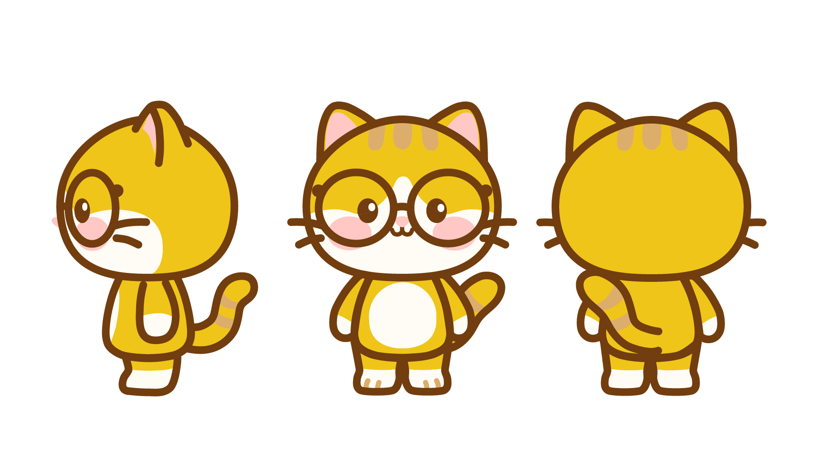

|IP吉祥物.
放过今天的自己，
60分也很厉害啦！
60分也很厉害啦！

可可
CoCo
- 年龄： 22
- 生日： 2003/03/21
- 星座： 白羊座
- MBTI： INTP-A
- 爱好： 唱歌、发呆
- 性格： 温和、固执
|三维三视图 3D Views

|二维三视图 2D Views

请补充图片：image/coco-2d-views.jpg|颜色规范与风格对比 Color & Style
Color Palette
主色调 (黄)
#EFC519
主色调 (米白)
#FFFCF5
辅助色 (橘金)
#DDAD6B
辅助色 (粉色)
#FFC8C5
辅助色 (深棕)
#723E0F
Character Style (2D vs 3D)

|动作设计 (3D) Action Design
Action 01
疑惑
补充图片: action-confused.jpg
Action 02
悲伤

Action 03
交流

Action 04
断网

|表情设计 Expressions (2D & 3D)
3D Expressions


2D Expressions


|情感化设计 Empty States
针对产品中可能出现的负面情绪节点（如无数据、无网络等），通过插画进行情感化补偿，降低用户的挫败感。